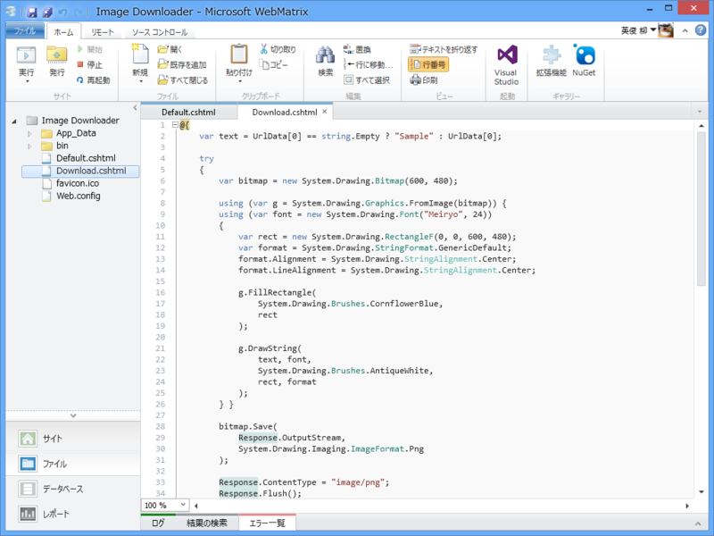
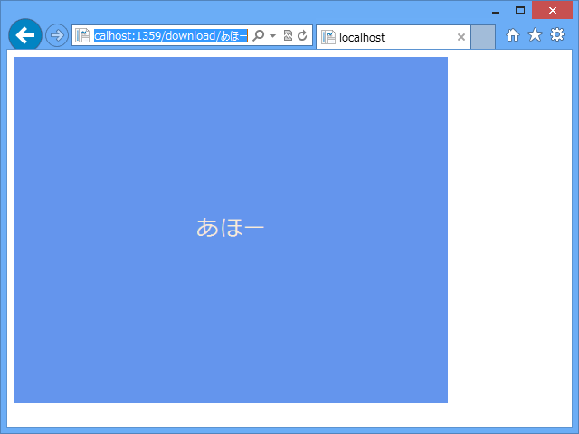
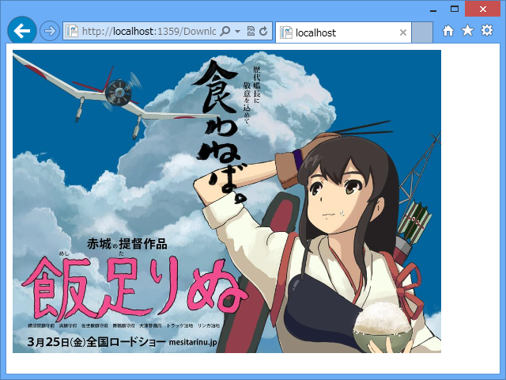
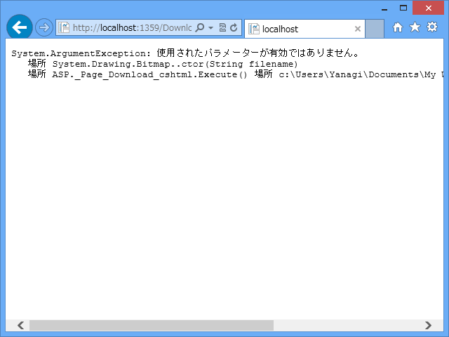

WebMatrix 3: Response.OutputStream
公開日：

動的に画像を出力したい、という場合はこんな感じでいいのかな。以下は「~/Download/あほー」にアクセスると、「あほー」と描かれた画像を出力する例。
@using System.Drawing@{ var text = UrlData[0] == string.Empty ? "Sample" : UrlData[0];
try { var bitmap = new Bitmap(600, 480);
using (var g = Graphics.FromImage(bitmap)) { using (var font = newFont("Meiryo", 24)) { var rect = new RectangleF(0, 0, 600, 480); var format = StringFormat.GenericDefault; format.Alignment = StringAlignment.Center; format.LineAlignment = StringAlignment.Center;
g.FillRectangle( Brushes.CornflowerBlue, rect );
g.DrawString( text, font, Brushes.AntiqueWhite, rect, format ); } }
bitmap.Save( Response.OutputStream, Imaging.ImageFormat.Png );
Response.ContentType = "image/png"; Response.Flush(); Response.End(); } catch (Exception e) { Response.ContentType = "text/plain"; Response.Write(e); Response.End(); } }

関係ないけれど、Razor だと using 句の {} が省略できない（if などのほかの制御文でも同じ）なので、using 句を連続して使う場合はネストが深くなる。仕方ないけれど、気持ち悪い。
静的な画像を出力する場合。
@{
try
{
var path = Server.MapPath(@"~/Images/image.jpg");
var bitmap = new System.Drawing.Bitmap(path);
bitmap.Save(
Response.OutputStream,
System.Drawing.Imaging.ImageFormat.Png
);
Response.ContentType = "image/png";
Response.Flush();
Response.End();
}
catch (Exception e)
{
Response.ContentType = "text/plain";
Response.Write(e);
Response.End();
}
}

エラーを起こしてみた。

実際に、Visual Studio でデバッグしてみてもちゃんと動作するので、安心してIIS 5.0に持って行ってみると、「GDI+で一般的なエラーが発生しました」というエラーを吐き出す。
いろいろと試してみたところ、MemoryStream に一度書き出してからOutputStreamへ送り込めば大丈夫。おそらく、原因は OutputStream がシークと読み取りを禁止している点。Image クラスの Save メソッド内で読み返しが行われているのか、CanSeek / CanReadをチェックしているのかは不明ですが、直接書き出すのは無理っぽい。
試してはないけど、こういうハマりどころもあるみたい。「気をつけねば」*1
*1:そもそも ASP.NET で GDI+ 使うのはあんまりよくないって聞いたこともある気がする